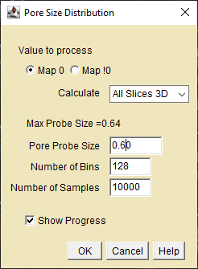
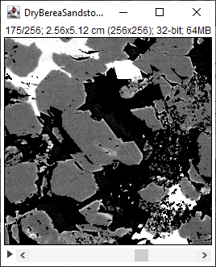
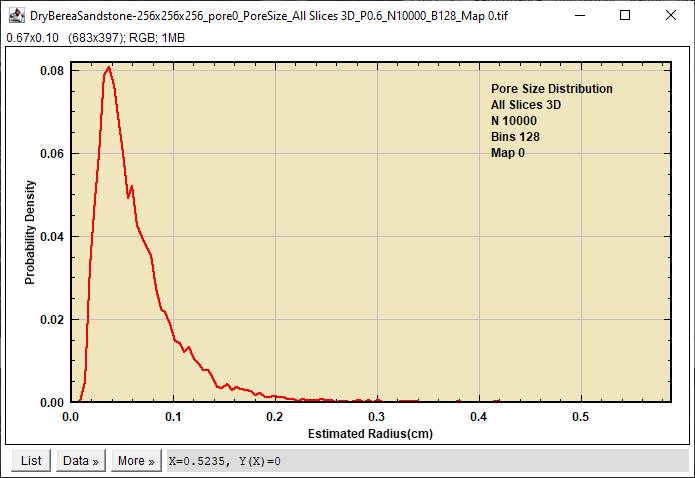

Experimental! This plugin was used to explore the utility and limitations of using the volume to surface ratio to compute the distribution of sizes of equivalent spheres. It is purely experimental and is not intended for any production use.
Requires ImageJ 1.53k or higher, Statistics.jar, ImageJAddins.jar.
See the Home page for PointFunctions/PoreSize download and installation instructions.
ImageJ plugin for the computing equivalent spherical Pore Size Distribution using the volume/surface ratio within multiple random sub-volumes.
In a two-component system, the Pore Size Distribution represents the probability density of finding a pore of radius R in the interval R±dR in the selected component.
The plugin scans random cubic sub-volumes and computes the equivalent sphere radius distribution from the selected component's interface area and volume.
The maximum sub-volume size is half the smallest image dimension
The plugin requires an image that has been segmented into zero and non-zero components.
The image can be a 2D image, a stack of 2D images, or a 3D image. 2D images use area to perimeter ratio.
Anisotropic pixels and voxels are supported.
The pixel units and lengths must remain constant in the image (no irregular spacings).
Volume to surface ratio is converted to a radius by a calibration against Euclidean Spheres.

Pore Size Distribution Dialog
Value to process - Select the zero or non-zero component to measure
Calculate - Options are Current Slice, All Slices 2D, All Slices 3D. All Slices 2D is useful for stacks that vary in a non-spatial dimension such as time or concentration etc. This option reports its results in a stack plot and a table of profile values for each slice.
Probe Size - The edge dimension of the scan cube.
Number of Samples - Select the number of random cubes. More samples decreases noise.
Show Progress - Displays a progress bar while executing.

3D stack of Berea Sandstone showing slice 175

Pore Size Distribution Plot
Utility and Limitations
The plugin gives appropriate results for test volumes containing relatively uniform random overlapping Euclidean spheres when the sub-volume size is larger than the typical sphere size. Similar results were obtained for image of well-sorted sandstones. The plugin did not perform well in more diverse collections of pore sizes. In that case, a larger sub-volume is required greatly increasing execution time and decreased pore-size resolution. In the limit of the sub-volume equaling the entire volume the pore radius collapses to a single value. In the example above, the large pore in slice 175 required a large sub-volume to obtain a reasonable result. Small sub-volumes fit mostly within the pore and contained little interface area returned very unrealistic pore radii.